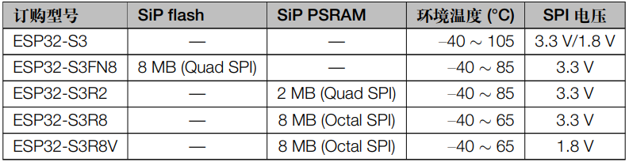

ESP32S3¶
GitHub : Wi-Fi Bluetooth Xtensa LX7 Dual Core 240 MHz BLE5.0 USB1.1 OTG AI CAN Touch QFN56
Xin简介¶

规格参数¶
ESP32-S3作为乐鑫现役旗舰产品，双核240MHz配置高于传统MCU，基于wireless连接能力实现对传统MCU的降维打击。
晶元面积 (die size) : ESP32C3 < ESP32S2 < ESP32S3 < ESP32
基本参数¶
特征参数¶
240 MHz Xtensa LX7 (2.56 CoreMark/MHz) Dual Core (4.92 CoreMark/MHz)
低功耗协处理器 ULP (FSM/RISC-V)
1 × 16bit DVP, 1 × 16bit LCD
2 × SDIO 主机
44 x GPIO，JTAG 接口
2x 12-bit ADC 100KSPS (20ch)
14 × 电容式传感 GPIO
4 Kbit eFuse，用户可用 1792bit
Note
ESP32-S3增加了用于加速神经网络计算和信号处理等工作的向量指令 (vector instructions)
模拟性能¶
10ch 12-bit SAR ADC1, 100 ksps
10ch 12-bit SAR ADC2, 100 ksps
芯片架构¶
功耗参数¶
电压范围：2.3 to 3.6 V
功耗范围：
ULP¶
RISC-V PicoRV32 FSM 8KB SRAM
电源管理单元，五种功耗模式，超低功耗协处理器 (ULP)：
ULP-RISC-V 协处理器
ULP-FSM 协处理器
连接能力¶
Link Budget : 118dBm Bandwidth : 150 Mbps
AP Model |
Channel |
Bandwidth |
TCP RX |
TCP TX |
UDP RX |
UDP TX |
|---|---|---|---|---|---|---|
R6850 |
10 |
HT20 |
72.92 Mbps |
76.40 Mbps |
86.01 Mbps |
76.70 Mbps |
WDR8690 |
10 |
HT20/40 |
48.81 Mbps |
51.90 Mbps |
57.89 Mbps |
60.20 Mbps |
AC23 |
11 |
HT40 |
60.86 Mbps |
76.50 Mbps |
85.59 Mbps |
69.30 Mbps |
R300 |
13 |
HT20 |
43.58 Mbps |
49.40 Mbps |
60.03 Mbps |
57.50 Mbps |
AX3 |
1 |
HT20 |
46.25 Mbps |
44.50 Mbps |
58.69 Mbps |
57.30 Mbps |
D268G |
1 |
HT20/40 |
70.77 Mbps |
79.30 Mbps |
87.66 Mbps |
93.70 Mbps |
ACRH17 |
1 |
HT20/40 |
74.76 Mbps |
76.50 Mbps |
87.71 Mbps |
86.40 Mbps |
AX3000 |
8 |
HT20/40 |
46.43 Mbps |
46.70 Mbps |
61.01 Mbps |
59.30 Mbps |
Hint
所有AP均配置加密模式
Wi-Fi¶
20dBm
Link Budget : 118dBm Bandwidth : 150 Mbps
在 2.4 GHz 频带支持 20 MHz 和 40 MHz 频宽，支持 1T1R 模式，数据速率高达 150 Mbps
天线分集
802.11 mc FTM
支持外部功率放大器
BLE5.0¶
BLE -94dBm 20dBm
高功率模式(20 dBm，与 Wi-Fi 共用 PA)
USB¶
USB 1.1 12Mbps
计算能力¶
加速指令¶
为了提高特定 AI 和 DSP (Digital Signal Processing) 算法的运算效率，ESP32-S3 中新增了一组扩展指令。处理器指令拓展 (PIE) 支持以下特性：
新增 128-bit 位宽通用寄存器
128-bit 位宽的向量数据操作，包括：乘法、加法、减法、累加、移位、比较等
合并数据处理指令与加载/存储运算指令
非对齐 128-bit 带宽的向量数据
取饱和操作
安全特性¶
内置安全硬件，4096 bit eFuse(其中1566 bit用户可用)，硬件加密加速器可支持 AES-128/256、Hash、RSA、HMAC，RNG
RSA 模块¶
RSA-4096
AES 模块¶
XTS-AES-128 XTS-AES-256
基于 AES-128-XTS 算法的 flash 加密方案，确保应用程序与配置数据在 flash 中保持加密状态。 flash 控制器支持执行加密的应用程序固件，这不仅为存储在 flash 中的敏感数据提供了必要保护，还防止了运行时由于固件更改造成的 TOCTTOU (time-of-check-to-time-of-use) 攻击。
数字签名¶
数字签名DS(Digital Signature) 可以通过固件不可访问的私钥生成，同样地，其 HMAC 外设也可以生成固件不可访问的加密摘要。
目前，大多数物联网云服务使用基于 X.509 证书的身份验证，数字签名外设保护了定义设备身份的私钥。这样一来，即使出现软件漏洞，它也能为设备身份提供强大的保护
Xin选择¶
品牌对比¶
Espressif 在WiFi MCU领域市场占有率第一，在中低端或高性价比定位的产品里鲜有对手，而且不断完善的生态主要的护城河，所有应用领域都有较高的开发起点。
功能对比¶
Characteristics |
UART/SPI/SDIO |
||||
|---|---|---|---|---|---|
1181.6 |
512KB/384KB |
USB1.1 OTG |
3/2/1 |
||
288KB/2MB |
16-bit ADC |
6/2/1 |
QFN56 |
W801 和 ESP32S3 两者的封装规格相同，主频配置相同，差异主要在： ESP32S3 是双核且带有USB， W801 拥有更多外设
Performance¶
USB |
AI |
Sleep |
|||||
|---|---|---|---|---|---|---|---|
1181.6 |
512K/384K |
FS OTG |
DSP |
8µA |
|||
1414 |
1.4M/128K |
FS OTG |
ART |
2.2µA |
64/100/176 |
型号对比¶
ADC/DAC/PWM |
|||||||
|---|---|---|---|---|---|---|---|
1181.6 |
512K/384K |
WiFi+BLE |
2(12bit)/X/10 |
1.1OTG+CAN |
|||
613.8 |
320K/128K |
WiFi |
2(12bit)/2(8bit)/8 |
1.1OTG+CAN |
|||
994.26 |
520K/448K |
WiFi+BLE |
2(12bit)/2(8bit)/18 |
ETH+CAN |
|||
407.22 |
400K/384K |
WiFi+BLE |
2(12bit)/X/6 |
CAN |
版本对比¶
主要对比集成的资源大小，便于硬件设计，对软件开发影响不大。
Xin应用¶
开发板¶
ESP32-S3-EYE¶
ESP32-S3-BOX¶

除了智能语音助手以外，还集触摸屏控制、传感器、红外控制器和智能网关等多功能于一体，拥有完善的 SDK 和丰富的例程。
ESP32-S3-USB-OTG¶
开发框架¶
ESP-IDF ESP-ADF ESP-MDF ESP-DL ESP-WHO ESP-Skainet
ESP32S3 支持乐鑫所有开发框架：Arduino , ESP-IDF , ESP-ADF , ESP-MDF
此外，凭借其 加速指令 特性，在如下开发框架有良好的表现
ESP-DL¶
Deep Learning
ESP-SR¶
Speech Recognition
ESP-WHO¶
人脸识别 人脸探测 运动探测
ESP-Skainet¶
WakeNet MultiNet 语言唤醒
ESP-Skainet 是乐鑫针对语音控制设备推出的智能语音助手。集成多种声学算法，如语音活动检测、声学回声消除、降噪和波束成形等，提供了增强的声学性能。
它不依赖云连接，可以完全实现离线运行，在本地乐鑫 SoC 上即可进行唤醒词检测和语音命令词（短语）识别。
外设应用¶
Touch¶
IOMUX¶
相对于传统的MCU，基于IO矩阵，可以将数字外设任意分配管脚，灵活性相当高。
支持快速信号如 SPI、JTAG、UART 等可以旁路 GPIO 交换矩阵以实现更好的高频数字特性。所以高速信号会直接通过 IO MUX 输入和输出。
基于RTC控制的IO MUX具有以下特性：
控制 22 个 RTC GPIO 管脚的低功耗特性；
控制 22 个 RTC GPIO 管脚的模拟功能；
将 22 个 RTC 输入输出信号引入 RTC 系统。
产品案例¶
Xin总结¶
能力构建¶
如果要掌握ESP32的开发，需要对Linux有一定的了解，包括编码风格和开发环境。
问题整理¶
相对传统的MCU使用的强大IDE环境，最大的槽点就是缺乏高度集成的工具环境，ESP-IDF的编译效率较低，文件修改后编译非常耗时
Note
由于ESP-IDF的多版本、开源(链接集成)和快速迭代特性，导致获取完整资源慢且不稳定，GitHub无法访问≈放弃
应用总结¶
就芯片配置而言，相对ESP32的升级力度不大，用以太网换了USB-OTG，更多是一种发展方向的探索，围绕软件生态构建应用场景。